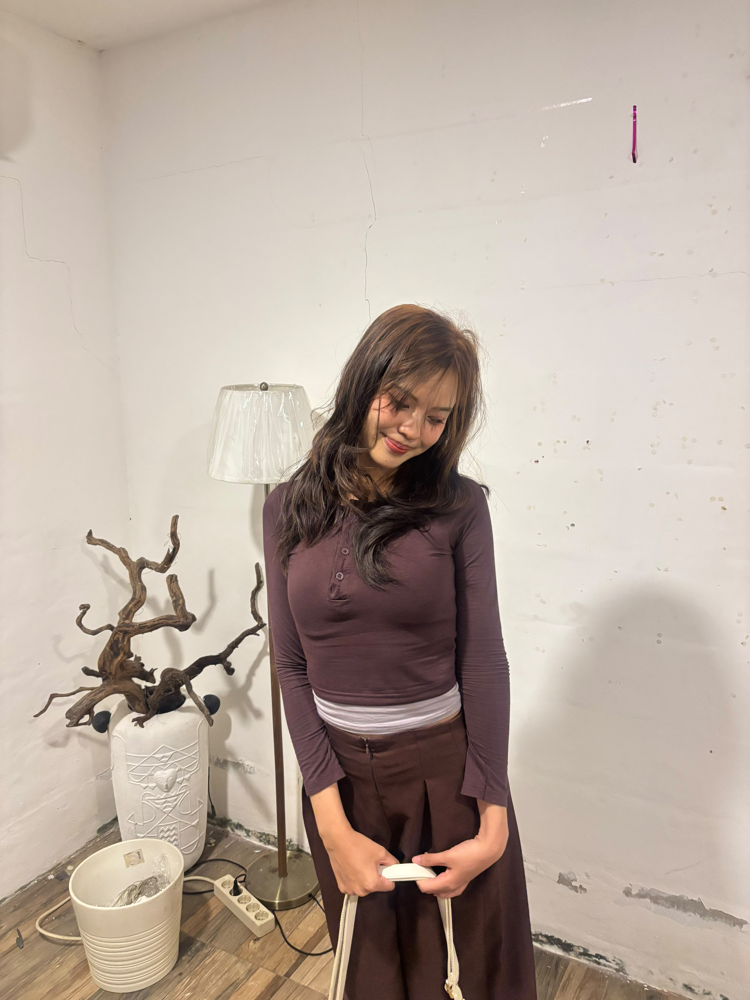

Mahasiswa Teknik Informatika
Nama: Sabrina Aulia Mutiara Rahman
Tempat, Tanggal Lahir: Jakarta, 5 Juli 2007
Alamat: Perumahan Griya Marza Blok B7 Jatirangga, Jatisampurna, Kota Bekasi
Pendidikan: Universitas Pamulang
Program Studi: Teknik Informatika
Halo! Saya adalah mahasiswa Teknik Informatika di Universitas Pamulang. Sembari menimba ilmu, saya juga bekerja di instansi pemerintah lebih tepatnya di satuan kerja Pusat Data dan Teknologi Informasi dibawah Kementerian Kebudayan. Saya memiliki ketertarikan terhadap teknologi, komputer, dan pemrograman. Saya senang mempelajari hal-hal baru serta mengembangkan kemampuan di bidang teknologi informasi.
Membaca webtoon, menonton drama, mendengarkan musik, dan belajar teknologi.
2026 - Sekarang
Program Studi Teknik Informatika
2022 - 2022
Jurusan Teknik Komputer dan Jaringan (TKJ)
Pengalaman Kerja
Memiliki pengalaman dalam bidang administrasi, akuntasi, penyusunan arsitektur, pembuatan dan pelengkapan dokumen audit Indeks SPBE/PEMDI pengelolaan data, penyusunan laporan, pengelolaan dokumen, dan tergabung didalam tim peneleahan clearance nasional & clearance internal, serta mendukung kegiatan administrasi di lingkungan pemerintahan digital.